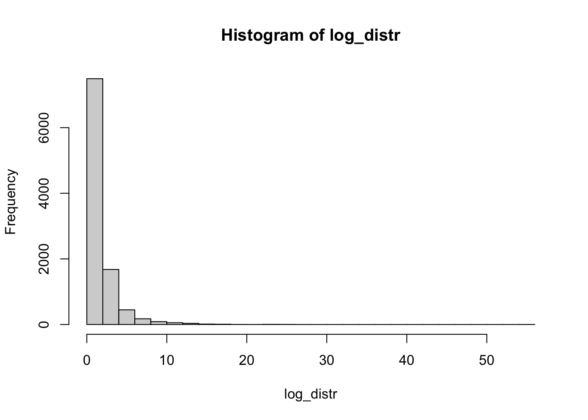

hist(rlnorm(1000), breaks = 30)
По итогам многочисленных дискуссий в чатах по статистике и биоинформатике (BioStat <- R | Чат по статистике и R, BIOINF | Education & Career), я решила пересмотреть на удвоенной скорости курс “Основы статистики” на платформе stepik самостоятельно. Давайте разберем его достоинства и недостатки, а также есть ли смысл его смотреть в 2023-2024 году.
Из достоинств данного курса стоит отметить, что он был создан в то время, когда было очень мало русскоязычных материалов по статистике такого формата. Да, были книги, но лекций на интерактивных платформах с возможностью проверять себя – не было.
Я сама посмотрела курс примерно в 2018 году, после очень плохого курса по статистике в университете и узнала что-то новое для себя, после чего уже начала изучать статистику преимущественно по книгам (а сейчас преподаю сама). На тот момент мне курс показался очень качественным, понравился простой язык изложения, не перегруженность формулами, формат заданий и их проверки (это преимущество в целом платформ по типу stepik, coursera, не конкретного курса).
Да, я не совсем поняла объяснение центральной предельной теоремы, но на тот момент это было не единственное, что осталось непонятным, поэтому не заподозрила авторов курса в неверном объяснении. Потом в чатах увидела, что очень многие критикуют курс, в том числе из-за некорректного объяснения центральной предельной теоремы (почитать можно здесь) и наконец решила пересмотреть и расписать самостоятельно. Обнаружила, что лектор очень неаккуратно обращается с терминами, формулировками, неверно объясняет значение ЦПТ и интерпретацию доверительных интервалов.
Разберем наиболее существенные неточности от самых серьезных к менее серьезным и в разбивке по блокам курса. Платформа степик к сожалению не позволяет делать ссылки с таймкодами, поэтому буду прикреплять ссылки на видео и подписывать время в тексте.
Вот тут было что-то совсем странное с интерпретацией доверительных интервалов (с 1.05).
“Потому что если у нас среднее номер 2 не попадает в доверительный интервал для среднего номер 1, и наоборот, среднее номер 1 не попадает в доверительный интервал для среднего номер 2, то такие различия у нас будут достигать уровня статистической значимости”.

Допустим, не будем придираться к формулировке что различия будут достигать уровень статистической значимости (?), хотя на самом деле это сомнительная формулировка, но интерпретация доверительных интервалов совсем неверная.
Я писала про доверительные интервалы и пределы погрешностей. Отсутствие перекрывания 95% доверительных интервалов говорит о статистически значимых различиях (p < 0.05), но речь идет именно о перекрывании усов, а вовсе не в том, что доверительный интервал одной выборки не перекрывается со средним второй. Перекрывание со средним ничего не значит, а что на картинке выше доверительные интервалы перекрываются, не говорит о том что различий нет, поскольку только отсутствие перекрывания говорит о статистически значимых различиях (вот здесь подробнее писала). Наличие перекрывания не говорит о том, что различий нет.
Считаю это очень серьезной неточностью и даже ошибкой курса, учитывая, что в целом доверительный интервал как явление дает простор для мисинтерпретации, так еще и в курсе приведено заведомо неверное объяснение.
Дмитрий Пензар достаточно подробно про это расписал, я здесь упомяну, что в формулировке Карпова ЦПТ становится практически бесполезной. Основная магия ЦПТ состоит в том, что для признака, который даже распределен не-нормально и обладает конечными средним и дисперсией, то выборочные средние будут распределены нормально.
Проверим на примере лог-нормального распределения
hist(rlnorm(1000), breaks = 30)
Извлечем тысячу раз выборки размером 100, посчитаем среднее и построим их распределение
samp_means_log <- replicate(1000, mean(rlnorm(100)))
hist(samp_means_log, breaks = 30)
Распределение средних из изначально ненормального распределения (логнормального) получилось очень похожим на нормальное распределение. Это получается благодаря центральной предельной теореме.
Вот тут можно посмотреть еще: Шайни апп для центральной предельной теоремы, особенно впечатляет, что распределение выборочных средних даже из равномерного распределение также будет распределено нормально.
Сюда относятся многочисленные “принять альтернативную гипотезу”, “статистически достоверно” вместо статистически значимо, соберем их в одном месте:
В ответах к заданию “принимаем нулевую гипотезу”
“Принимаем различия статистически достоверными” 1.26 1.45 3.24 5.04. Заметьте, тут в рамках одного видео такая формулировка встречается 4 раза, что нельзя списать на то, что автор просто оговорился.
На этом степе в задании “различия считаются статистически достоверными”.
В формулировке задания “статистически достоверными”.
“различиям между группами признавались статистически достоверными” в тексте задания.
Неправильно говорить “достоверность” вместо статистической значимости, потому что в математике достоверное событие – то, которое происходит со 100% вероятностью. Про термин “достоверность” почитать можно дискуссию в чате, начиная с этого сообщения. В целом в чате поиском по слову достоверность можно найти достаточно аргументации, почему это нельзя использовать как замену статистической значимости.
И еще статья на эту тему: «Достоверность» или «Статистическая значимость» 12 лет спустя, Зорин Никита Александрович
Также в алгоритме статистического вывода, мы не принимаем нулевую или альтернативную гипотезу, а можешь лишь отклонить нулевую гипотезу или не отклонить ее.
В общем, пока я собирала эту подборку и пересматривала заново, я чуть не сошла с ума, так что давайте перейдем от “достоверностей” к другому.
Теперь разберем по разделам.
Общее впечатление: в целом большая часть вещей объяснена нормально, особенно простых, но при этом проскальзывают неточности и неаккуратности с формулировками.
Здесь немного странная история про перевод из количественной переменной в номинативную: “измерить рост наших испытуемых, это будет непрерывная количественная переменная, проранжировать наших испытуемых, то есть перевести их в ранговую переменную, а потом разделить на две группы: 1 выше среднего, 2 ниже среднего, то есть сделать номинативную переменную”. Все-таки последняя переменная не будет в чистом виде номинативной, потому что можно задать операцию сравнения. Хотя конечно сравнивать две группы уже имеет мало смысла.
В целом по всему разделу описательных статистик идет терминологическая непоследовательность в формуле дисперсии выборки и генеральной совокупности, то есть n-1 то появляется в формуле, то исчезает.
Карпов объясняет, что n-1 в знаменателе формулы связано со степенями свободы, но объяснение немного другое, вот здесь или тут можно посмотреть.
Вот тут сказано, что между первым и третьим квартилем в боксплоте находится ровно 50% наблюдений. Но это не обязательно так, например, это будет неверно в случае, если в данных есть повторяющиеся значения.
boxplot(c(1, 2, 2, 2, 2, 3, 3, 3))Здесь в “ящике” бокса находится 7/8 значений, то есть 87.5%. В целом, можно придумать и совсем экстремальный случай, когда в ящике бокса находятся все наблюдения и “усов” нет совсем. Может быть это незначительная неточность, но в любом случае проявление неаккуратности формулировки.
Общее впечатление: самая слабая часть курса, наибольшее количество ошибок сосредоточено именно здесь.
Здесь некорректно назван t-тест почему-то парным t-тестом. Видимо имелся ввиду двухвыборочный t-тест. Напоминаю, что парный или зависимый t-тест применяется к зависимым выборкам и формула расчета его другая.
В целом, везде t-критерий Стьюдента называется критерий t-Стьюдента.
Странная постановка нулевой и альтернативной гипотезы (0.20):
“нулевая гипотеза: в генеральной совокупности никакого различия между этими средними значениями нет, тогда как альтернативная гипотеза <…> будет говорить, что на самом деле эти средние в генеральной совокупности не равны”. В комментариях предложили более правильную формулировку, но все равно это существенная неточность, да и много ли кто читает комментарии после просмотра видео.
Далее, не было сказано ничего про тест Велча (или тест Стьюдента с поправкой Велча), зато сказано, что нужно обязательно равенство дисперсий при сравнении двух групп t-тестом. Для t-теста без поправки Велча это действительно так, но я лично не вижу ни одной причины использовать именно тест Стьюдента без поправки Велча. Потому что при равных дисперсиях результат теста Велча практически не будет отличаться от теста Стьюдента, а при разных дисперсиях тест Велча точнее. К тому же по умолчанию в R считается именно тест с поправкой Велча (в функции t.test() параметр var.equal = FALSE, то есть предполагаем, что дисперсии не равны).
Например, вот
t.test(extra ~ group, data = sleep)
Welch Two Sample t-test
data: extra by group
t = -1.8608, df = 17.776, p-value = 0.07939
alternative hypothesis: true difference in means between group 1 and group 2 is not equal to 0
95 percent confidence interval:
-3.3654832 0.2054832
sample estimates:
mean in group 1 mean in group 2
0.75 2.33 Также сказано про нормальность распределения как требование для t-теста, но причем только в случае, если значений в выборке меньше 30. Почитать, почему это не так, можно по ссылке.
Про формулу и одинаковый размер выборки для теста Стьюдента, формула верная только если размер выборки одинаковый.
Не то про QQ
Очень мимоходом сказано про тест Манна-Уитни, не сказано ничего про формулировку нулевой гипотезы, кажется что мы сравниваем средние, только в рангах, а это далеко не так. В случае Манна-Уитни мы сравниваем сдвиг распределений относительно друг друга.
В части про поправки на множественное тестирование, все поправки собраны в одну кучу без расстановки акцентов на то, какой метод использовать в каких случаях.
Лучше почитать мой пост про поправки.
Общее впечатление: часть недостаточно подробная, очень мало деталей и материалов для дальнейшего изучения.
Экстраполяция https://stepik.org/lesson/9996/step/2?unit=1926 0.20
Не сказано про угрозу экстраполяции, не акцентировано внимание, что регрессия работает только в диапазоне значений независимой переменной.
Опечатка на слайде и в тексте видео (1.15): в требованиях к множественной линейной регрессии указана гетероскедастичность вместо гомоскедастичности.
https://stepik.org/lesson/9995/step/2?unit=1925 3.00 про показатели модели при мультиколлинеарности. Про то что при мультиколлинеарности коэффициент тянет в одну сторону, когда все другие зафиксированы и при сильной коллинеарности мы как бы не можем зафиксировать связанный предиктор.
Про регрессию в целом рассказано недостаточно подробно и нет ссылок на другие источники для дальнейшего развития. Например, ничего не сказано про VIF для оценки мультиколлинеарности, про информационные критерии AIC, BIC, и методы отбора лучшей модели.
На тему регрессии рекомендую курс лекций Марины Варфоломеевой и Вадима Хайтова.
Как уже отмечала выше, можно было смотреть курс в то время, когда он только вышел и качественных материалов было немного. В настоящий момент смотреть курс “Основы статистики” настоятельно не рекомендую, лучше почитать и посмотреть в моей подборке здесь (также в комментариях к посту приложено множество материалов).
Все вышенаписанное не относится к платным курсам Карпова, про платные я знаю немного.